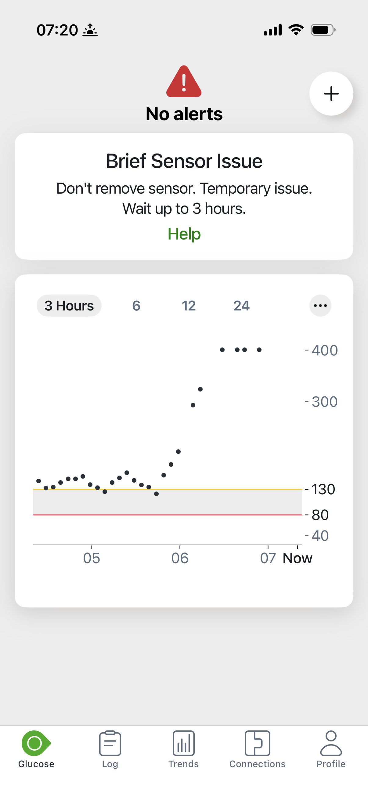

My First Week Using the Dexcom G7: My Experience (2026)
Four days ago, I put a Dexcom G7 on my arm. That sounds boring until you know it was the first time in more than 18 years I had worn anything diabetes-related on my arms. Three good days. Then day four happened.
After five years on the Dexcom G6, I switched to the G7 last week. Dexcom recommends wearing the G7 on your arm, so that is where I put it. In 20 years with type 1 diabetes, through pens, needles, and 18 years on the Omnipod, I had never once put a diabetes device on my arm. It felt strange for about ten minutes.
First Impressions: Smaller, Simpler
The insertion was simple and fairly painless. And the size difference is real. The G7 is significantly smaller than the G6, and I love that. For three days, everything worked exactly the way it should. If the story ended there, this would be a short post about how much I like the smaller sensor.
The story did not end there.
Day 4: The Sensor Went Rogue at the Gym
I was at the gym when my G7 started jumping all over the place. 120, then 233, then 336, then HIGH, which means above 400. I felt okay. Not great, not terrible. Just okay, the way you feel mid-workout.
Here is the part I keep replaying: I decided to trust the equipment. I took correction insulin for the high. But something felt off, so I did not take the full correction, and I kept working out for another hour.
One honest detail: I could not double-check the reading at the gym, because I do not typically carry my meter day to day. That is a real gap in my routine, and it meant I had no way to verify a sensor I was already doubting.
23. The Meter Said 23.
I drove home, parked my car, and started to feel faint. I texted my fiancee that I was not feeling well and rushed inside to test with my meter and a fingerstick.
It read 23.
Twenty-three. While my G7 had said HIGH minutes earlier. Then the app gave up on the reading entirely:

My fiancee reacted fast: orange juice and sugar packets, right away. The rest of my morning was gone. I could not get to the office for work. I was replacing the sensor, putting a new one on, and getting my blood sugar back up and balanced.
Our free calculator works out exactly how much insulin and how many supplies to pack for your trip length, with a safety buffer built in.
Build my packing list →What I Learned
- When the number does not match how you feel, check with a meter before you dose. This is the big one. If I had taken the full correction for a 400-plus reading while actually crashing, this story ends very differently.
- My skepticism saved me. Taking only a partial correction because something felt off was the right call. Trusting the equipment is usually right. Usually is not always.
- Not carrying my meter left me blind. I do not bring it day to day, and at the gym that meant a suspicious sensor I could not verify. That gap made a bad situation worse.
- Fast sugar access matters. My fiancee getting orange juice and sugar packets to me within minutes is what turned this around. However you treat your lows, make sure it is within reach, not in another room.
And one thing this post is not: a verdict on the G7. This was my first sensor failing on day four of week one. I am still new to the device, and one bad sensor does not define it. I will share a real take once I have a longer track record. For now, I like the size, I like the insertion, and I have a healthy new respect for the fingerstick.
If you are traveling with the G7, I also wrote up what I know about G7 airport security and flight tips, and how the G7 pairs with the Omnipod 5 on the road.
Frequently Asked Questions
Can a Dexcom G7 give wrong readings?
Yes. Any CGM sensor can fail. My first G7 sensor failed on day 4: it climbed from 120 to 233 to 336 and then read HIGH (above 400) while my actual blood sugar was 23. When a reading does not match how you feel, verify it with a fingerstick before dosing.
What does ‘Brief Sensor Issue’ mean on the Dexcom G7?
It is the message the G7 app shows when the sensor hits a temporary problem. On my screen it said: Don't remove sensor. Temporary issue. Wait up to 3 hours. It appeared minutes after my sensor gave false HIGH readings.
Should you take insulin based on a CGM reading that does not match how you feel?
No. Check with a fingerstick first. I felt okay while my G7 said HIGH, so I was skeptical and took only a partial correction. My meter later showed 23. If I had taken the full correction for a 400-plus reading while actually crashing, the outcome could have been much worse.
Is the Dexcom G7 smaller than the G6?
Yes, significantly smaller, which I love. Insertion was simple and fairly painless. Dexcom recommends wearing the G7 on your arm, which was a first for me: in more than 18 years with diabetes, I had never worn a diabetes device on my arm.
Is this a review of the Dexcom G7?
No. This is one sensor failing in week one, not a verdict on the G7. I am four days in and still new to it. I will share a real take once I have a longer track record.